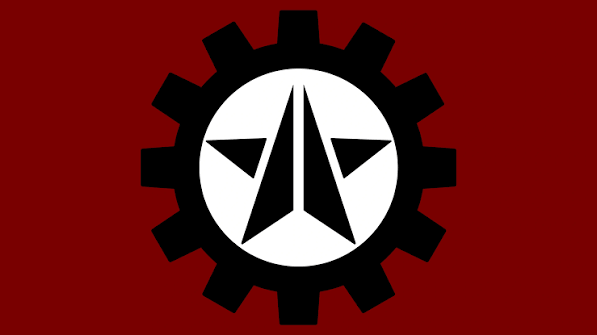
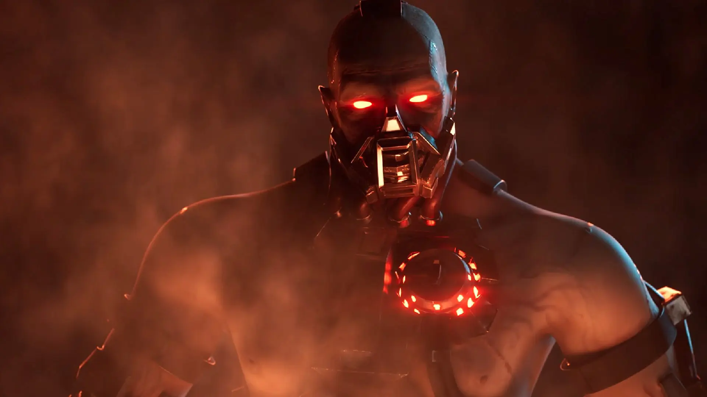
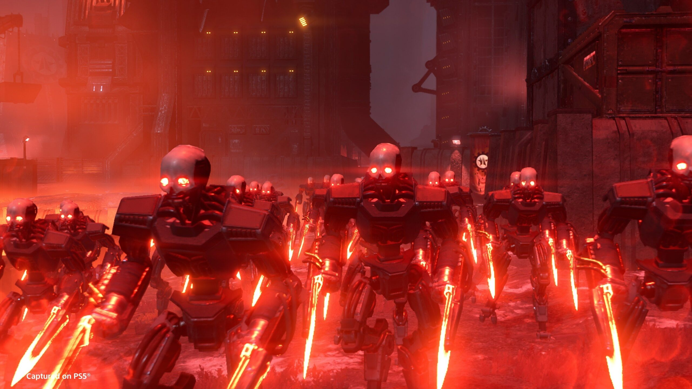
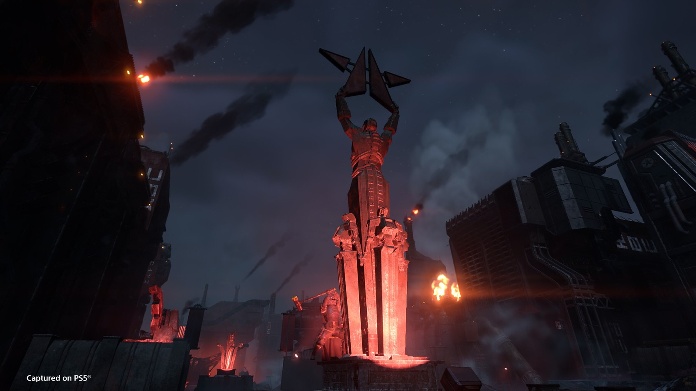

Origem
Os  Automatons não surgiram do nada: eles são a herança mecânica dos Ciborgues, os secessionistas meio-humanos que declararam independência da Super Terra em seu mundo natal, Cyberstan, ainda durante a Primeira Guerra Galáctica. Derrotados e aprisionados, os Ciborgues foram condenados a trabalhar nas minas profundas do planeta, extraindo minérios para a Federação.
Automatons não surgiram do nada: eles são a herança mecânica dos Ciborgues, os secessionistas meio-humanos que declararam independência da Super Terra em seu mundo natal, Cyberstan, ainda durante a Primeira Guerra Galáctica. Derrotados e aprisionados, os Ciborgues foram condenados a trabalhar nas minas profundas do planeta, extraindo minérios para a Federação.
Foi em segredo, nas profundezas de Cyberstan, que os Ciborgues sobreviventes conceberam seus sucessores: uma legião de máquinas de guerra construída ao longo de décadas, escondida das forças de Super Terra em instalações subterrâneas protegidas de bombardeios orbitais.
A pista mais concreta sobre essa origem veio da decodificação da "Embarcação 00", uma nave não identificada que partiu de Cyberstan em 2180 — cerca de quatro anos antes do primeiro ataque em larga escala dos Automatons. A carga e o destino da viagem permanecem desconhecidos, mas a nave é tratada por eles quase como um artefato sagrado, citada com reverência em suas transmissões.

Os Ciborgues de Cyberstan
Antes de dar origem aos Automatons, a Nação Ciborgue era formada por humanos que abraçaram o socialismo e romperam unilateralmente com a Federação, fundando seu próprio governo em Cyberstan. A retaliação de Super Terra foi rápida: após um ataque terrorista atribuído aos Ciborgues contra uma megacidade, a Federação declarou guerra e esmagou a rebelião.
Os sobreviventes não foram exterminados, mas escravizados nas minas próximas ao núcleo do planeta. Para suportar o calor extremo daquele ambiente, os próprios Ciborgues passaram a se modificar cada vez mais com implantes cibernéticos — um processo de automodificação que, gerações depois, culminaria na criação de seus "filhos" mecânicos.

A Legião Que Ninguém Viu Nascer
Por cerca de um século, Super Terra acreditou que a ameaça Ciborgue estava contida. Foi um erro de cálculo: enquanto isso, nas profundezas de Cyberstan, os Automatons eram fabricados em segredo, projetados para retomar a luta que seus criadores não conseguiram vencer.
Quando finalmente emergiram, os Automatons lançaram um ataque surpresa nos setores sudoeste do mapa galáctico, avançando com uma força de vanguarda blindada. Diferente do avanço puramente instintivo dos insetos, essa foi uma ofensiva planejada — o início da reconquista que os Ciborgues sonhavam desde sua derrota.

Máquinas Com Vontade Própria
A propaganda de Super Terra descreve os Automatons como máquinas sem mente, programadas apenas para matar em nome de uma ideologia socialista. A realidade parece mais complexa: relatos de campo sugerem que essas unidades são capazes de sentir emoções, como tristeza e raiva, e de agir por conta própria — o que torna sua obediência à causa dos Ciborgues ainda mais perturbadora.
Em combate, os Automatons privilegiam armamento à distância, foguetes e unidades pesadamente blindadas para sufocar os Helldivers com poder de fogo, em vez de depender da aproximação corpo a corpo típica dos enxames biológicos. Essa diferença exige uma mentalidade tática distinta: contra os Autômatos, precisão, supressão e cobertura pesam mais do que velocidade de reação.

Subfacções da Legião
Assim como os demais inimigos da galáxia, os Automatons não são um bloco único. Três subfacções foram identificadas em campo, cada uma com um papel tático próprio dentro da guerra contra a Super Terra.

Jet Brigade
Unidades equipadas com mochilas de propulsão roubadas e adaptadas de Helldivers caídos, usadas para saltos agressivos e flanqueamentos rápidos. Atuam como força de blitz, avançando de planeta em planeta antes de perderem efetivo.
Incineration Corps
Especialistas em armamento incendiário, capazes de arrasar ecossistemas inteiros. Diferente da Jet Brigade, podem manter até três divisões ativas simultaneamente em planetas distintos, sustentando ofensivas em múltiplas frentes.
Cyborg Legion
Formada pelos próprios descendentes diretos dos Ciborgues originais, combatentes humanos aprimorados com cibernética pesada. Primeiro reencontrada em Cyberstan, representa o núcleo tático e ideológico da legião.
Galeria


Linha do Tempo
- Antes de 2084 A Nação Ciborgue declara independência de Super Terra a partir de Cyberstan, abraçando o socialismo como ideologia de estado.
- 2084 A Federação esmaga a rebelião Ciborgue na Primeira Guerra Galáctica. Os sobreviventes são escravizados nas minas de Cyberstan.
-
2180
A misteriosa "Embarcação 00" parte de Cyberstan rumo a um destino desconhecido — o primeiro indício documentado da criação dos Automatons.
-
~2184
Os Automatons lançam sua primeira ofensiva em larga escala nos setores sudoeste da galáxia, reacendendo o conflito contra Super Terra.
- 2184-2185 A Jet Brigade e a Incineration Corps são identificadas pela primeira vez, marcando o surgimento das subfacções especializadas dentro da legião.
-
2185
A Cyborg Legion é reencontrada em Cyberstan durante a Operação Valid Pretext, confirmando o elo direto entre os Automatons e seus criadores humanos.